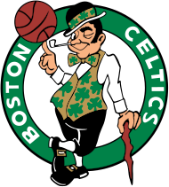

Boston Celtics

Boston Celtics so ameriška profesionalna košarkarska ekipa s sedežem v Bostonu. Kelti tekmujejo v Nacionalni košarkarski zvezi (NBA) kot član vzhodne konference Atlantic divizije lige. Celticsi, ustanovljeni leta 1946 kot ena od prvotnih osmih ekip lige, igrajo svoje domače tekme v TD Gardenu, ki je tudi dom Boston Bruins iz Nacionalne hokejske lige. Celtics so ena najuspešnejših košarkarskih ekip v zgodovini lige NBA. 17 naslovov franšize v ligi NBA je skupno največ vseh ekip, poleg Los Angeles Lakers. Celticsi trenutno držijo rekord za največ zabeleženih zmag v kateri koli ekipi lige NBA. Celticsi imajo opazno rivalstvo z Los Angeles Lakers, ki je bilo močno poudarjeno v šestdesetih in osemdesetih letih prejšnjega stoletja. Med številnimi dvoboji obeh ekip v osemdesetih sta se zvezdnik Celticsov, Larry Bird, in zvezdnik Lakersov, Magic Johnson, nenehno prepirala. Franšiza je proti Lakersom igrala rekordnih 12-krat v finalu lige NBA (vključno z nedavnimi nastopi v letih 2008 in 2010), od tega so Celticsi zmagali devetkrat. Štirje igralci Celticsa (Bob Cousy, Bill Russell, Dave Cowens in Larry Bird) so osvojili nagrado za najkoristnejšega igralca lige NBA za rekordnih 10 nagrad MVP. Tako vzdevek "Celtics" kot njihova maskota "Lucky the Leprechaun" sta naklon zgodovinsko velikemu irskemu prebivalstvu Bostona in tudi Original Celtics, vodilni ekipi pred ligo NBA. Vzpon Celticsov do prevlade se je začel v poznih petdesetih letih prejšnjega stoletja, potem ko je ekipa, ki jo je vodil trener Red Auerbach, leta 1956 pridobila centra Billa Russella, ki je postal temelj dinastije Celtics, v menjavi na dan nabora leta 1956. Vodil sta ga Russell in točke čuvaja Boba Cousyja so Celticsi leta 1957 osvojili svoj prvi naslov prvaka lige NBA. Russell je skupaj z nadarjeno spremljevalno zasedbo bodočih članov dvorane slavnih, vključno z Johnom Havlicekom, Tomom Heinsohnom, K. C. Jonesom, Samom Jonesom, Satchom Sandersom in Billom Sharmanom, vodil Celticse v največje obdobje v zgodovini franšize, saj so od leta 1959 do 1966 osvojili osem zaporednih naslovov prvaka lige NBA.
Trenutna ekipa

2. junija 2021 so Celticsi imenovali glavnega trenerja Brada Stevensa za predsednika košarkarskih operacij, ki je nadomestil Dannyja Aingeja, potem ko je ta napovedal svojo upokojitev. 18. junija je Stevens opravil svojo prvo transakcijo na svojem novem položaju, ko je zamenjal Kembo Walkerja, 16. izbire na naboru NBA leta 2021, in izbor drugega kroga leta 2025 v zameno za Horforda, Mosesa Browna in izbor drugega kroga leta 2023. Dogovor je Celticsom dal nekaj več finančne prožnosti, saj je Horford v naslednjih dveh letih plačal približno 20 milijonov dolarjev manj kot Walker. Celticsi so prav tako izboljšali svojo globino v ospredju z dodajanjem Horforda in Mosesa Browna, ki sta zabeležila 21 točk in 23 skokov, od tega 19 skokov v prvem polčasu, na tekmi 27. marca med Celtics in Thunder. 23. junija 2021 so poročali, da se je Stevens odločil, da bo Ime Udoka zaposlil kot svojo zamenjavo za glavnega trenerja Celticsov. Tatum je na tekmi vseh zvezd lige NBA leta 2022 v Clevelandu tretjič nastopil s klopi. Aprila 2022 so se Celticsi kvalificirali za končnico Lige NBA 2022 kot drugi nosilci vzhodne konference z izidom 51–31 in v prvem krogu po koncu sezone premagali Brooklyn Nets. Nato so se pomerili z Milwaukee Bucks v polfinalu vzhodne konference in Miami Heat v finalu vzhodne konference, obe ekipi so premagali v serijah sedmih tekem, s čimer so Celticsom prinesli prvi nastop v finalu po letu 2010. Celtics so povedli z 2–1 v seriji, vendar je izgubil naslednje tri igre in izgubil proti Golden State Warriors s 4–2.